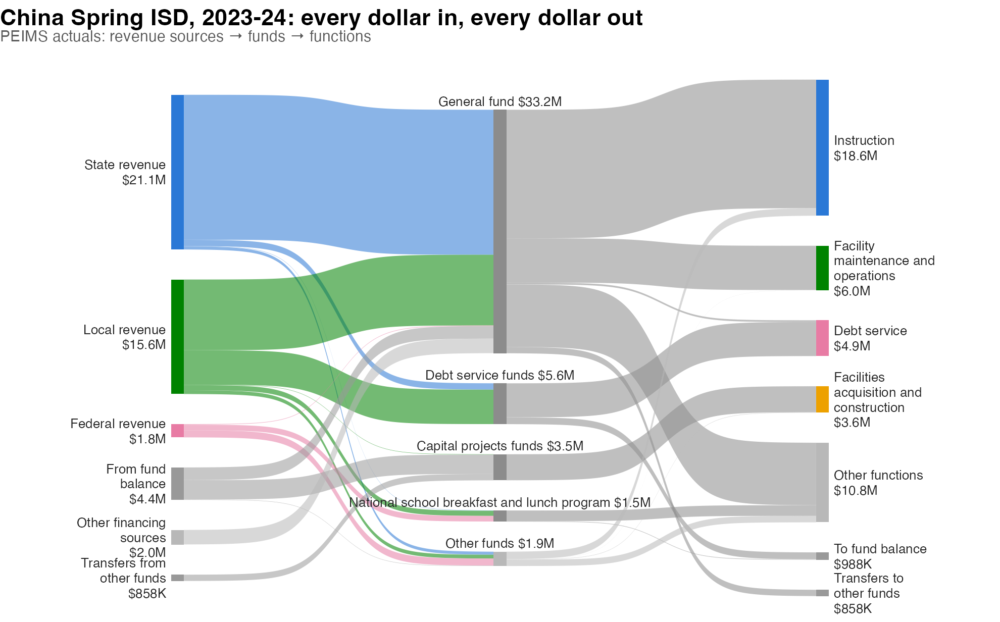
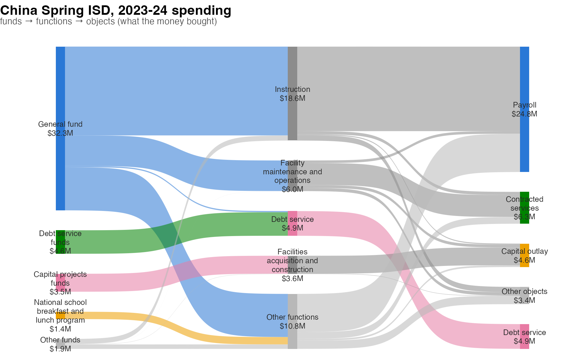
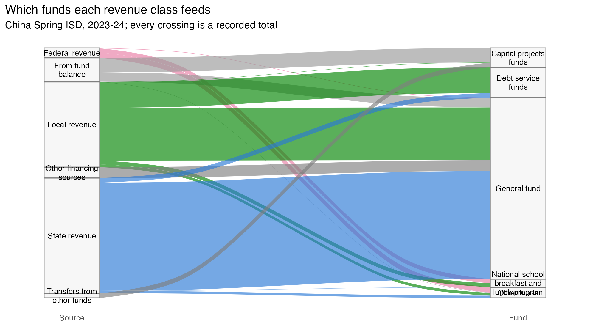

Money-flow diagrams from PEIMS finance data
money-flow-diagrams.RmdFinancial-media flow diagrams – the “how they make money” income
statements popularized by App Economy Insights –
read a company’s quarter as a river: revenue segments merge on the left,
costs and profit split off to the right. A Texas school district’s year
can be drawn exactly the same way from the PEIMS financial data that
txs_get_peims_finance() returns, and this vignette is a
tour of how: first the concepts (what a flow diagram claims,
and what the accounting actually supports), then the built-in helpers,
then the same chart built with other tools.
Throughout we use China Spring ISD’s 2023-24 actuals. Chunks that
download data or draw charts only run when the vignette is built with
TXS_LIVE=true; the code is complete either way.
library(txschools)
library(dplyr)
cs <- txs_get_peims_finance(2024, "actual", "district", verbose = FALSE) |>
filter(district == "161920")The concept: what a flow diagram claims
A Sankey-style chart makes two kinds of statements. Node sizes say “this much money was in this category” – those are ordinary totals, and PEIMS supports them richly, because every row carries the full chart of accounts:
- source class – local (object 5700s), state (5800s), federal (5900s) revenue;
- fund – the account the money sits in (general fund, food service, Title I, debt service, …);
- function – what spending was for (instruction, school leadership, …);
- object – what was bought (payroll, contracted services, supplies, capital outlay, …);
- program intent – who it was intended to serve (basic services, special education, …).
Ribbons, though, say something stronger: “this money became that money.” That claim is only honest where the accounting actually records the join. Money is fungible – TEA does not record which revenue dollar paid which invoice – so a ribbon drawn straight from “State revenue” to “Instruction” would be an invention.
What is recorded, on both sides, is the
fund. A revenue row says which fund a dollar entered;
an expenditure row says which fund it left, along with its function,
object, and program intent. Funds are also legally meaningful: grant
funds are restricted, so a federal dollar arriving in the Title I fund
can only leave as Title I spending. That makes
source -> fund -> function a chain of genuine
recorded totals, and it is why txs_peims_flow() refuses to
put "source" next to anything but "fund".
Two wrinkles remain. First, money also enters and leaves funds outside ordinary revenue and spending: PEIMS records inter-fund transfers (objects 7915 in, 8911 out) and other financing sources and uses (bond, loan, and lease proceeds, asset sales; the remaining 7900s/8900s). The flow builder draws these through their own nodes – transfers as half-edges via “Transfers from/to other funds”, because TEA records each end on its own fund but not the fund-to-fund pairing. Second, funds rarely break even in a year: a district draws down bond proceeds it banked earlier, or tucks away a surplus. What is left after revenues, spending, transfers, and financing is each fund’s true change in its pot, reconciled with explicit “From fund balance” and “To fund balance” nodes – so both sides of every fund sum identically and the chart accounts for every dollar.
The built-in pipeline
txs_peims_flow() turns a pull into a stage-to-stage edge
list; txs_plot_peims_flow() draws it with ggsankey
(GitHub-only:
remotes::install_github("davidsjoberg/ggsankey")) and
returns a regular ggplot.
flows <- txs_peims_flow(cs, lump = 4)
flows
#> # A tibble: 31 × 5
#> from_axis from to_axis to amount
#> <chr> <chr> <chr> <chr> <dbl>
#> 1 source State revenue fund General fund 1.98e7
#> 2 source Local revenue fund General fund 9.65e6
#> 3 source Local revenue fund Debt service funds 4.70e6
#> 4 source From fund balance fund Capital projects funds 2.64e6
#> 5 source Other financing sources fund General fund 1.98e6
#> 6 source From fund balance fund General fund 1.72e6
#> 7 source Federal revenue fund Other funds 9.60e5
#> 8 source State revenue fund Debt service funds 8.59e5
#> 9 source Transfers from other funds fund Capital projects funds 8.58e5
#> 10 source Federal revenue fund National school breakfas… 7.73e5
#> # ℹ 21 more rowsThe edge list is the whole interface:
from_axis/from and
to_axis/to name the stages and nodes,
amount is dollars. Note the fund-balance rows doing the
reconciliation.
library(ggplot2)
txs_plot_peims_flow(flows) +
labs(
title = "China Spring ISD, 2023-24: every dollar in, every dollar out",
subtitle = "PEIMS actuals: revenue sources → funds → functions"
) +
theme(plot.title = element_text(face = "bold", size = 15),
plot.subtitle = element_text(color = "grey35", size = 10,
margin = margin(b = 6)))
Reading it tells the district’s story: state and local dollars run through the general fund into instruction; the local interest-and-sinking property tax flows through debt-service funds to debt payments; the capital-projects fund spends bond money banked in earlier years (the “From fund balance” node); federal dollars arrive in their own funds – school lunch, IDEA, Title I – and leave as those programs’ spending.
Deeper axes to the right
Expenditure rows record fund, function, object, and program intent jointly, so any rightward continuation among those axes stays honest. What did instruction dollars buy?
txs_peims_flow(cs, axes = c("fund", "function", "object"), lump = 4) |>
txs_plot_peims_flow() +
labs(
title = "China Spring ISD, 2023-24 spending",
subtitle = "funds → functions → objects (what the money bought)"
) +
theme(plot.title = element_text(face = "bold", size = 15),
plot.subtitle = element_text(color = "grey35", size = 10,
margin = margin(b = 6)))
"program" extends the same way (special education,
career and technical education, Title I schoolwide, …), and
lump controls how many nodes each axis keeps before folding
the tail into “Other”.
Styling
The plot helper returns a ggplot, so the usual grammar applies:
palette overrides node colors by name, unit
sets the dollars per drawn strand ($10,000 by default),
space opens up the vertical gaps, and anything else –
titles, captions, ggsave() – is ordinary ggplot2.
The hub variant: when you don’t need funds
For an audience that just wants “money in, money out,” a simpler
two-stage chart with the district as a single hub node also works:
revenue classes merge into the district, functions split out of it. Node
sizes stay exact; what you give up is ribbon-level honesty through the
middle (and the per-fund grant stories). The edge list for it is two
summarise() calls:
rev <- cs |>
filter(grepl("^5[789]", object_code)) |>
mutate(from = case_when(
grepl("^57", object_code) ~ "Local revenue",
grepl("^58", object_code) ~ "State revenue",
grepl("^59", object_code) ~ "Federal revenue")) |>
summarise(amount = sum(amount), .by = from) |>
mutate(to = "China Spring ISD")
spend <- cs |>
filter(grepl("^6", object_code)) |>
summarise(amount = sum(amount), .by = function_label) |>
transmute(from = "China Spring ISD",
to = stringr::str_to_sentence(function_label), amount)This is the shape most Sankey tools consume directly, which brings us to tooling.
Other tooling for the same edges
txs_peims_flow() returns a plain tibble on purpose:
nothing about it is tied to ggsankey. Here is the landscape.
ggalluvial (CRAN)
ggalluvial,
Jason Cory Brunson’s package, is the CRAN-stable ggplot2 extension for
this family. Its native subject is the alluvial diagram –
categories tracked across axes – and it is at its best when every
crossing is a real joint observation. The source -> fund
stage is exactly that, so a two-axis alluvial of it is fully honest,
crossings included:
library(ggalluvial)
library(ggplot2)
src_fund <- flows |>
filter(from_axis == "source", to_axis == "fund")
ggplot(src_fund,
aes(y = amount, axis1 = from, axis2 = to, fill = from)) +
geom_alluvium(width = 1/8, alpha = 0.65) +
geom_stratum(width = 1/8, fill = "grey97", color = "grey50") +
geom_text(stat = "stratum",
aes(label = stringr::str_wrap(after_stat(stratum), 16)),
size = 3, lineheight = 0.95) +
scale_fill_manual(values = c(
"State revenue" = "#2a78d6", "Local revenue" = "#008300",
"Federal revenue" = "#e87ba4", "From fund balance" = "grey60"
), guide = "none") +
scale_x_discrete(limits = c("Source", "Fund"), expand = c(0.1, 0.05)) +
labs(title = "Which funds each revenue class feeds",
subtitle = "China Spring ISD, 2023-24; every crossing is a recorded total",
y = NULL) +
theme_minimal() +
theme(axis.text.y = element_blank(), panel.grid = element_blank())
Where ggalluvial fights you is the multi-stage income-statement look:
it draws contiguous strata (no vertical gaps between nodes) and tracks
each ribbon across all axes, so a three-stage chart becomes
either a web of crossings or, with its flow-aggregating
geom_flow(), perfectly flat bands. Those are correct
renderings of alluvial semantics – they are just a different genre than
the gapped-node Sankey, which is why the package helpers use ggsankey
instead.
plotly (interactive)
For hover values and draggable nodes, plotly’s sankey
trace consumes a node/link list that is a few lines from the edge list.
When this vignette is built live (as on the package site) the chart
below is a real widget – hover a ribbon for its dollars, drag the nodes
around:
library(plotly)
nodes <- unique(c(flows$from, flows$to))
node_pal <- c(
"State revenue" = "#2a78d6", "Local revenue" = "#008300",
"Federal revenue" = "#e87ba4", "Instruction" = "#eda100",
"Facility maintenance and operations" = "#1baf7a",
"Debt service" = "#eb6834",
"Facilities acquisition and construction" = "#4a3aa7"
)
node_col <- unname(node_pal[nodes])
node_col[is.na(node_col)] <- "#9c9a92"
plot_ly(
type = "sankey",
valueformat = "$,.0f",
node = list(label = nodes, color = node_col, pad = 18, thickness = 12),
link = list(
source = match(flows$from, nodes) - 1L, # zero-indexed
target = match(flows$to, nodes) - 1L,
value = flows$amount
)
)networkD3 (interactive, D3)
The older D3 wrapper works the same way from a data frame of links and a data frame of nodes:
library(networkD3)
nodes <- data.frame(name = unique(c(flows$from, flows$to)))
links <- data.frame(
source = match(flows$from, nodes$name) - 1L,
target = match(flows$to, nodes$name) - 1L,
value = flows$amount
)
sankeyNetwork(Links = links, Nodes = nodes, Source = "source",
Target = "target", Value = "value", NodeID = "name",
fontSize = 12, nodeWidth = 12)Choosing
| Tool | On CRAN | Output | Gapped-node Sankey look | Best for |
|---|---|---|---|---|
ggsankey (via txs_plot_peims_flow()) |
no (GitHub) | static ggplot | yes | reports, READMEs, print |
| ggalluvial | yes | static ggplot | no (contiguous strata) | honest joint-distribution alluvia; CRAN-only environments |
| plotly | yes | htmlwidget | yes | dashboards, exploration, hover detail |
| networkD3 | yes | htmlwidget | yes | D3 styling, Shiny |
Whichever renderer you pick, keep the two concept rules: node totals may come from any axis, but ribbons should follow joins the accounting records – and when the two sides of a chart don’t balance, say where the difference went, because with PEIMS data you always can.